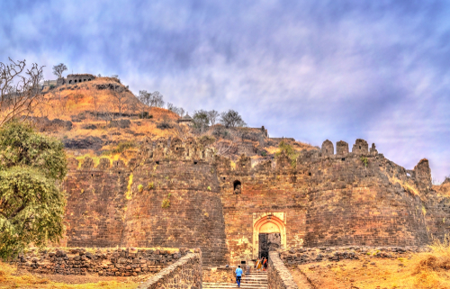
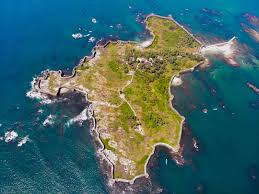

India has a rich cultural heritage and history, and what better way to experience its royal lineage than to visit the majestic palaces and forts in India?
CHITTORGARH FORT
Chittorgarh Fort is the biggest fort in India, and also a World Heritage Site. Spread over about 2.8 kms and 400 acres and the highest elevation in the fort is at about 1075 metres.
The two distinct pillars in the fortress, the Kirti Stambh and the Vijay Stambh are extremely preciously carved with the most intricate artwork found in the region. Without about twenty water bodies, nineteen temples and four palace complexes and memorials,
this is one historical site that needs quite some time for exploration and will leave a lasting impression on you for a while.
RED FORT
A UNESCO World Heritage Site, the Red Fort in the Indian capital, is the apex of Mughal architecture, and hence, one of a kind structures in the country.
It is one of the most well preserved, thus famous forts in India. Made completely out of red sandstone, the fort has been maintained in an excellent condition, and that is why the fort still has not lost its scarlet tinge.
This fort in India also went on to become a huge symbol of perfected architecture to various structures designed in the neighbouring states.
.
DAULATABAD FORT
Daulatabad Fort was the capital fort of the Tughlaqs, under Muhammad bin Tughlaq. This hotly debated and argued upon fort in India, built upon a whim, remains a sight to witness.
Muhammad bin Tughlaq forcibly moved the whole population of Delhi to here, and before he knew it, they ran out of the water and eventually had to abandon the Fort and city.

SINDHUDURG
Sindhudurg Fort is located in the Malvan town of Sindhudurg District (Konkan region) of Maharashtra, 500 km south of Mumbai. It was constructed by Shri Chhatrapati Shivaji Maharaj and is a fort in India of daunting size.
Iron was used for casting after the foundation was laid.
Presently, most tourists visit the fort because of the well-established scuba-diving and snorkelling attractions nearby.

PANHALA FORT
The Panhala Fort lies 20 km away from the main city of Kolhapur, situated at its north-west. This fort holds its position amongst the most massive location in the country and is the largest one in the Deccan region.
It was built in a strategic position where a major trade route ran within Maharashtra from Bijapur to the coasts of Arabian Sea.
This place is not only a must-visit for the people who love exploring historic locations but also for those who love to trek.